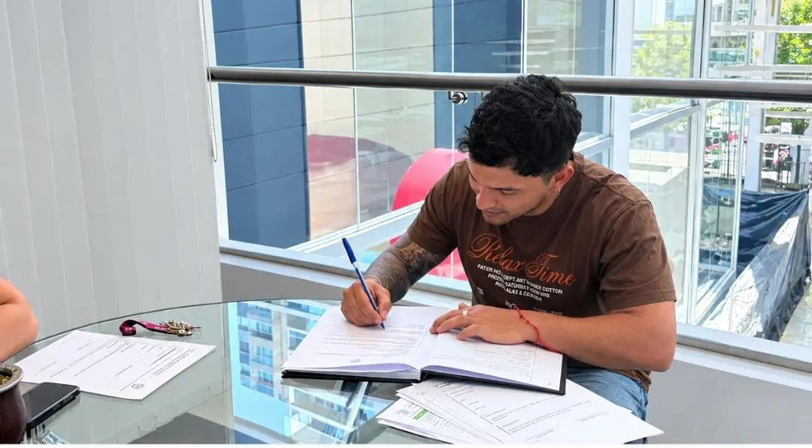

MISIÓN
Representar al fútbol amateur tucumano mediante una organización comprometida con el desarrollo deportivo y social, generando oportunidades para jugadores y jugadoras de nuestra provincia.
ORGULLO · COMPROMISO · IDENTIDAD
FÚTBOL 5 · FÚTBOL 7 · FÚTBOL 11
TEMPORADA 2026
ALIADOS INSTITUCIONALES


El fútbol amateur también escribe historia.
ALIANZAS INSTITUCIONALES · FAT 2026
Sumá tu marca al fútbol amateur tucumano. Si te interesa acompañar a los Seleccionados Oficiales de FAT, comunicate con nosotros para conocer las posibilidades de patrocinio.
CONTACTO PARA SPONSORS
01 / IDENTIDAD INSTITUCIONAL
FAT · FÚTBOL AMATEUR TUCUMÁN
FAT – Fútbol Amateur Tucumán es un proyecto deportivo independiente creado con el firme propósito de promover, desarrollar y representar el fútbol amateur de la Provincia de Tucumán mediante la conformación de seleccionados representativos en las modalidades de Fútbol 5, Fútbol 7 y Fútbol 11, tanto femenino como masculino.
Nuestra organización busca oportunidades para jugadoras y jugadores amateurs, fomentando el compromiso, la disciplina deportiva, la inclusión social y un profundo sentido de pertenencia.
El proyecto tiene como objetivo generar una estructura deportiva que permita que los talentos amateurs de nuestra provincia puedan representar a Tucumán en amistosos, encuentros, torneos y competencias interprovinciales.
Representar al fútbol amateur tucumano mediante una organización comprometida con el desarrollo deportivo y social, generando oportunidades para jugadores y jugadoras de nuestra provincia.
Consolidarnos como una organización referente del fútbol amateur de Tucumán y proyectar nuestro modelo hacia otras provincias argentinas.
NUESTROS VALORES FUNDAMENTALES
02 / EL PROYECTO DEPORTIVO
El proyecto deportivo de FAT aborda de manera integral el crecimiento del deporte amateur a través de las siguientes líneas de acción:
Conformar equipos representativos de Tucumán en Fútbol 5, Fútbol 7 y Fútbol 11.
Impulsar la participación, visibilidad y desarrollo del fútbol femenino amateur.
Generar oportunidades de representación para jugadores amateurs de la provincia.
Realizar encuentros deportivos con otros seleccionados y organizaciones.
Participar en torneos y encuentros deportivos fuera de la provincia.
Generar acuerdos con instituciones, empresas, organizaciones deportivas y otros actores vinculados al deporte.
Promover actividades relacionadas con preparación física, técnica, táctica y formación deportiva.
Elevar el nivel de competencia y organización del fútbol amateur tucumano.
02 / MODALIDADES
03 / SUMATE A FAT
Si querés formar parte de los Seleccionados Oficiales de Fútbol Amateur Tucumán (FAT), comunicate con nosotros para recibir más información.
Fútbol 5 · Fútbol 7 · Fútbol 11
También podés comunicarte por teléfono al +54 381 556-0086. La incorporación a los seleccionados está sujeta al proceso de convocatoria y selección de FAT.
04 / DOCUMENTO OFICIAL
Seleccionados Oficiales · Versión 1.0 · Año 2026
El contenido que sigue reproduce los artículos del reglamento adjunto para su lectura pública.
El presente Reglamento General tiene por objeto establecer las normas de organización, funcionamiento, derechos y obligaciones que regirán para los/las jugadores/as que integren los Seleccionados Oficiales de FAT – Fútbol Amateur Tucumán, en las modalidades de Fútbol 5, Fútbol 7 y Fútbol 11.
Para integrar un Seleccionado Oficial de FAT, el/la jugador/a deberá presentar: Copia del Documento Nacional de Identidad (DNI). Tener dieciséis (16) años cumplidos o más. En caso de ser menor de dieciocho (18) años, autorización escrita del padre, madre o tutor legal. Certificado de Aptitud Física (Psicofísico) vigente. Certificado de Antecedentes o Buena Conducta, cuando FAT lo considere necesario. Formulario Oficial de Inscripción completo. Declaración Jurada firmada. Aceptación del presente Reglamento. Comprobante del Seguro Deportivo Obligatorio.
Todo/a jugador/a deberá adherirse al Seguro Deportivo Oficial establecido por FAT. Ningún/a jugador/a podrá entrenar, disputar encuentros deportivos ni participar en actividades oficiales sin encontrarse debidamente asegurado/a.
Las convocatorias serán realizadas exclusivamente por el Cuerpo Técnico y la Dirección Deportiva designada por FAT. Las decisiones de convocatoria serán inapelables.
La convocatoria tendrá en consideración: condiciones futbolísticas, conducta, compromiso, asistencia, disponibilidad para entrenamientos y viajes, estado físico y respeto al presente Reglamento.
Los/Las jugadores/as convocados/as deberán asistir a entrenamientos, amistosos, concentraciones, reuniones y demás actividades organizadas por FAT. La inasistencia injustificada podrá ser considerada para futuras convocatorias.
Los/Las jugadores/as deberán informar previamente cualquier impedimento laboral, familiar, educativo o personal que pudiera dificultar su participación en entrenamientos, viajes o competencias.
Todo/a jugador/a deberá utilizar exclusivamente la indumentaria oficial de FAT durante entrenamientos, actos institucionales, competencias y actividades oficiales.
No se permitirá:
Los/Las jugadores/as autorizan a FAT a utilizar fotografías y videos obtenidos durante entrenamientos, partidos y eventos con fines deportivos, institucionales y de difusión del proyecto.
Los/Las jugadores/as deberán respetar los compromisos institucionales asumidos por FAT con sus patrocinadores oficiales durante todas las actividades organizadas por la institución.
FAT procurará gestionar recursos destinados a cubrir total o parcialmente los gastos de traslado, alojamiento, alimentación e indumentaria. Cuando ello no sea posible, las condiciones serán informadas previamente a los/las convocados/as.
Un/a jugador/a podrá dejar de integrar un Seleccionado Oficial por: renuncia voluntaria, lesión, incumplimiento del presente Reglamento, inasistencias reiteradas o decisión fundada del Cuerpo Técnico o de la Dirección Deportiva.
Toda sanción podrá ser analizada por la Dirección Deportiva o por la autoridad que FAT designe para tal fin. La resolución adoptada será comunicada al/a la jugador/a.
05 / DECLARACIÓN DE CONFORMIDAD
Declaro haber leído íntegramente el presente Reglamento General de FAT – Fútbol Amateur Tucumán, comprender su contenido y aceptar todas sus disposiciones, comprometiéndome a cumplirlas durante mi permanencia como integrante de cualquiera de los Seleccionados Oficiales de FAT.
Asimismo, manifiesto que toda la documentación presentada es auténtica y me comprometo a respetar las decisiones adoptadas por las autoridades, el Cuerpo Técnico y la Dirección Deportiva de la institución.
En el documento original, esta declaración incluye espacios para apellido y nombre, DNI, lugar, fecha y firma del/de la jugador/a. Esta página es informativa y no reemplaza la declaración firmada.

CUERPO TÉCNICO · SELECCIONADOS OFICIALES FAT
Dirección, trabajo y compromiso con el fútbol amateur tucumano.